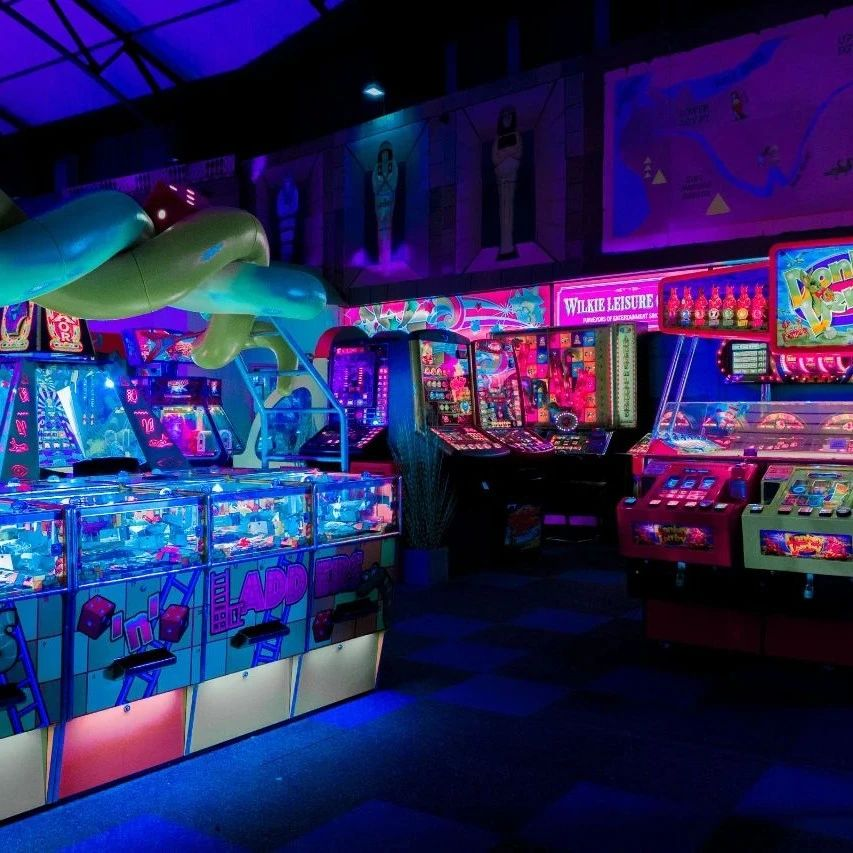
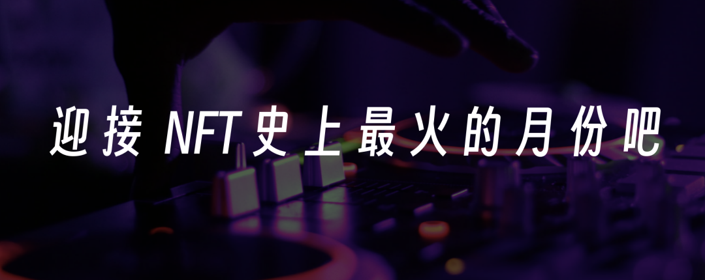
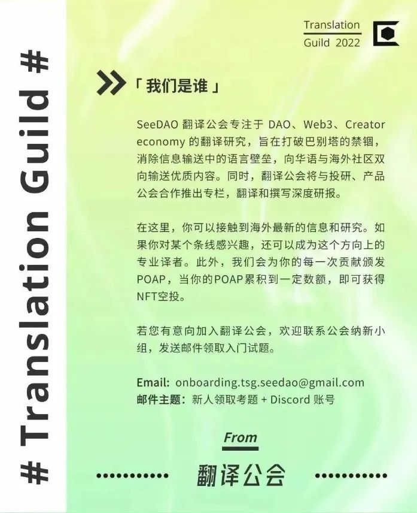

SeeDAO | NFT在其他行业怎么玩？
作者: Slienterr
分类:
NFT
“简谈 NFT 的现实用例”

NFT 构建了数字稀缺性，可用作唯一的、可证明的标识符。它可以表明哪一个数字资产才是原创——就像在充满复制作品的房间里为你标识出那幅唯一的原作。NFT，也叫非同质化代币，是一种具有独特设计的区块链代币。不像 BTC，ETH 或者 SOL 那样的同质化代币，每一个 NFT 都不相同，没有跟它一样的代币。因此，NFT 可以用来证明某个东西的独特特征或者唯一性——它们通常会绑定相关的元数据，例如图片、视频或者文档。NFT 能够通过发行者和相关的元数据来证明对数字或者实物资产的所有权。以太坊上的 NFT 也被称为 ERC-721 代币，但它们也以不同的格式存在于 Solana、Avalanche、Cardano 和 Tezos 等其它区块链上。虽然批评者或许认为这样的代币并无必要，但 NFT 的确能够为持有者提供一系列不同的用例。NFT 构建了数字稀缺性，可用作和唯一的、可证明的标识符。在日益数字化的世界中，数字资产可能让人感觉价值较低，这只是因为它们中有些可以被轻易地拷贝和复制。但是 NFT 可以表明哪一个数字资产才是原创——就像在充满复制作品的房间里为你标识出那幅唯一的原作。NFT 能够让持有者自行保管，这意味 NFT 的持有者能够完全拥有数字资产的所有权，而无需为了托管去信任一个第三方中介或网络服务商。在加密货币的世界里，「不拥有密钥，就不拥有货币」指的是，真正「拥有」数字资产的唯一方式就是拥有私钥的完整主权，并将数字资产存储在自己保管的软件或硬件钱包里。NFT 还能够开辟跨平台资产转移的新途径，也称为互操作性。前亚马逊工作室高管、元宇宙评论家马修-保尔（Matthew Ball ）此前在接受 Decrypt 采访时表示，NFT「显然是具有价值的」，并补充道，NFT 能够随着元宇宙的扩张而不断增长，是我们目前看到的最「可行的虚拟商品解决方案。」NFT 的设计对「拥有」数字资产这一概念进行了全新的诠释。好莱坞和独立电影产业对 NFT 的采用出于各种不同原因。比如，随着消费者逐步从物理碟片转向数字文件和流媒体，家庭娱乐产业日渐衰退。派拉蒙（Paramount）、华纳兄弟（Warner Bros.）、狮门影业（Lionsgate）等大型传统影业和流媒体平台开始把 NFT 当作其现有知识产权（IP）的一种新的收入来源。华纳兄弟推出了《指环王》系列 NFT，尝试重新构建家庭娱乐的未来愿景。这个 NFT 系列可以解锁若干特殊内容，并且带有一份该电影的数字拷贝，基本上取代了 DVD。奈飞则在《怪奇物语》NFT 上采取了不同做法。这家流媒体平台决定为其订阅用户发放该剧集主要演员的 NFT 数字海报，作为完成每周线上游戏的奖励。这些好莱坞的最大玩家们开始纷纷涉足 NFT 世界，一些向粉丝售卖数字藏品，而另一些则将体验游戏化。但是电影 NFT 并不一定都服务于商业宣传——还有一些人正在试图用它带来革命性的变化。独立电影制作人尼尔斯-朱尔（ Niels Juul），曾担任马丁-斯科塞斯的《沉默》和《爱尔兰人》的制片人，他将 NFT 当作为缺乏制作经费的电影项目筹集资金的一种方式。此前在 Decrypt 的一次访谈中，朱尔提到，「我知道有许多很棒的剧本一直无人问津，需要的拍摄经费大概1000万、1500万或者2000万美金不等，因为制片公司只关心漫威和特许经营的那些东西。」为了资助那些大影业公司不会投资的中小成本预算的电影，朱尔创办了 NFT 影业和 KinoDAO，后者允许 NFT 持有者在各种电影制作决策中拥有话语权，并通过代币门槛获得专属特权和奖励。《饥饿游戏》的联合制片人布莱恩-昂克勒斯（Bryan Unkeless）也设计了类似的方案——但是想通过 NFT 为即将推出的多媒体项目《奔跑者》筹集资金和吸引粉丝。昂克勒斯和他的的团队目前正集中精力在完善故事和《奔跑者》漫画的创作等方面，随后才会着手进行电视剧集、视频游戏等其它媒体形式的开发。NFT 让《奔跑者》创作团队拥有了他们想要的创意控制权，不再受审查方的牵制，同时还得以建立自己的社区，直接从粉丝那里获得反馈。「坦率地讲，很多 Web3 项目都拥有难以置信的视觉特效，甚至世界构建也非常棒。但挑战在于，他们还不具备将自己拓展到多种媒介所需要的总体概念和结构。」在 Decrypt 的一次访谈中昂克勒斯这么说。「我希望我们从电影、电视以及游戏行业所获得的知识和经验，足以让我们知道如何有效地开展工作。」因为喜欢 NFT 的潜力而投入其中的群体并非只有好莱坞的制片人们。一些知名演员，比如安东尼-霍普金斯和斯科特-伊斯特伍德，也已经开始玩起了 NFT。在以太坊上，以霍普金斯所扮演的各种角色为主题的 NFT 系列几分钟内就销售一空；伊斯特伍德之前在采访中告诉 Decrypt，他同样计划为铁粉推出自己的 NFT。虽然看起来好莱坞正在逐步靠近 Web3，但是并不是所有人都确定会对这个行业给予支持。2022 年 5 月，《奔跑者》团队的布莱斯-安德森（Bryce Anderson）在推特上写道：好莱坞还没有准备好迎接这次变革。「电影行业已经做好准备拥抱 NFT 了吗？不，还没有」，安德森说。「许多地方甚至都还没有接受流媒体、超级英雄或数码摄影机。但是任何东西只要观众喜欢，最终好莱坞就也会喜欢。」许多音乐人，如 DJ 史蒂夫-青木（Steve Aoki）和 3LAU，认为传统音乐产业需要彻底的变革。艺人们只能挣到流媒体歌曲总版税中的很小一部分，因此为了维持生计，常常不得不被迫举办巡演和现场演出。在新冠全球肆虐期间，巡回演出搞不起来了，艺术家们越来越指望其它的赚钱方法。成天跟计算机打交道的电子音乐制作人和艺术家们开始探索 NFT 的使用场景，有望借助它们跳过大厂牌与粉丝建立更直接的连结。事实上，在 2022 年 2 月的一场音乐盛典中青木(Aoki)坦承，他从 NFT 中赚的钱比做十年音乐赚的还要多，这件事情震惊了整个互联网。「真的要我说透的话，好吧，过去十年我一直在做音乐……6 张专辑，把全部赚到的钱加起来，也没有我去年发行一次 NFT 赚的多，并且，我对音乐也更加痴迷了，」青木讲道。对那些音乐产业的人来说，青木的声明并不令人意外。艺人的版税问题是电子音乐艺人和 DJ Justin「3LAU」Blau 创办自己的 Web3 音乐平台 Royal 的主要原因，该平台让艺人能够拥有自己创作的音乐，并通过销售 NFT 向付费粉丝发放一定比例的音乐版权。其他的音乐人，如第谷（Tycho）和伊勒明德（Illmind,），希望将 NFT 作为他们专属社区的某种「门票」。「我并没有像人们一开始吹捧的那样把它看成……乌托邦式的愿景，」第谷此前告诉 Web3 Decrypt。「但我认为，这肯定是艺术家工具箱中的另一个新工具，任何时候拥有其他任何形式的杠杆，我都认为它会以某种方式改变权力的分配。」现在已经清楚的是：电子音乐艺人比其他类型的音乐人更有可能进入 NFT 的世界。Audius的数据表明，电子音乐和嘻哈艺人在其平台上最受欢迎。电子音乐艺人迪伦·弗朗西斯（Dillon Francis ）此前告诉 Decrypt，「大多数电子音乐艺人都试图站到技术发展的最前沿去，因为我们的音乐是在电脑上完成的。」弗朗西斯说，「你知道的，电子音乐不靠 Billboard Top 10 热曲。我们靠的是自己的曲目在节日活动和俱乐部中巡回播放，以及博客上的口碑……这也是 Web3 文化和社区如此吸引我们的另外一个原因。」在 2022 年元宇宙的大肆宣传下，许多奢侈时尚品牌发行了视觉艺术或者数字可穿戴主题的 NFT 系列，这些 NFT 有时还关联了现实世界中的真实资产。一些高级时尚设计品牌似乎在使用 NFT 和 Web3 作为一种吸引年轻一代数字原住民的方式。蒂芙尼发行了 250 个与加密朋克（Yuga Labs’ Crypto Punks）关联的限量版 NFT。支付 30 个 ETH，加密朋克持有者就可以将他们的像素化角色变成现实中的蒂芙尼项链。Gucci 在《沙盒》（The Sandbox）游戏中买下了土地，并一直活跃在 Roblox 上。它也推出了自己的 NFT，并曾在 2022 年 5 月表示，其部分商店将接受 BTC 和 ApeCoin 支付。同样，Prada, Givenchy, Balmain, Dolce & Gabbana, 和 Balenciaga 也接受用 NFT 作为产品收益的一种数字方式，尽管很少公开讨论是否会用 NFT 来认证实体商品。在街头服饰和运动服饰领域，Adidas, Nike, 和 Puma 也都已进军 Web3 领域。Nike 推出了 RTFKT 并且已经发布了很多运动鞋 NFT，有时候还与实体运动鞋关联。Adidas 也正在与 Yuga Labs 合作发布该品牌的数字可穿戴商品。Puma 则购买了 .eth 以太坊域名服务（ENS），并且也随之推出自己品牌的元宇宙可穿戴商品。谈到 .eth 域名，在线电子商务网站 Farfetch 也买了他们的域名，并且社交媒体上宣布，他们开始进军 Web3 和 NFT 领域。NFT 在传统游戏业中已经引起了不小的轰动。虽然一些公司，如 Ubisoft, Take-Two, Epic Games, 以及 Square Enix 已经接受了这样的思路，准备开发一些带有 NFT 资产和饰品的游戏，然而另外一些像 Valve（Steam 商店）和独立开发商 Aggro Crab Games 这样的从业方则强烈反对。Electronic Arts 采取了谨慎乐观的立场，但似乎还没有积极地投入 NFT 游戏的开发和竞赛。微软的态度则比较复杂，一方面，这位技术巨人在《我的世界》中禁止了第三方 NFT，另一方面，它的一位区块链负责人则表示，加密货币和 Web3 是该公司较大「投资组合」中的一部分。索尼似乎正在探索游戏内 NFT 的技术，因为它在 2021 年为其游戏部门申请了 NFT 相关的专利。游戏 NFT 的拥护者表示，带有 NFT 资产的游戏，为玩家提供了一条将自己投入的时间货币化的途径，也能让他们对自己的游戏成就和数字资产产生更强的所有权意识。反对者则辩称，已经有各种市场可供玩家出售他们的游戏账户，并且认为 NFT 是完全没有必要的。在以太坊合并之前，围绕游戏内 NFT 有许多反对的声音，以至于 GSC Game World 和 Team17 取消了即将发行的游戏中的 NFT 计划。虽然传统游戏开发厂商对游戏内 NFT 的态度各不相同，但是依然出现了一些以 NFT 为核心的新游戏类型。像 Axie Infinity, Splinterlands, Alien Worlds, 以及 Big Time 就是这样一些以游戏内的 NFT 资产为核心与前提的例子。另外还有一些游戏公司为了让自己的品牌现代化和数字化，也进入了 Web3 领域。实体零售商 GameStop 开设了一个 NFT 交易市场，并且与 ImmutableX（一个与以太坊兼容的区块链）合作，通过其平台销售 Web3 游戏 NFT。“原文作者：Kate Irwin
译者：Slienterr
校对：Roy
排版：Qiao
审核：SuanNai
图片来源于网络，如有侵权，请联系删除。

